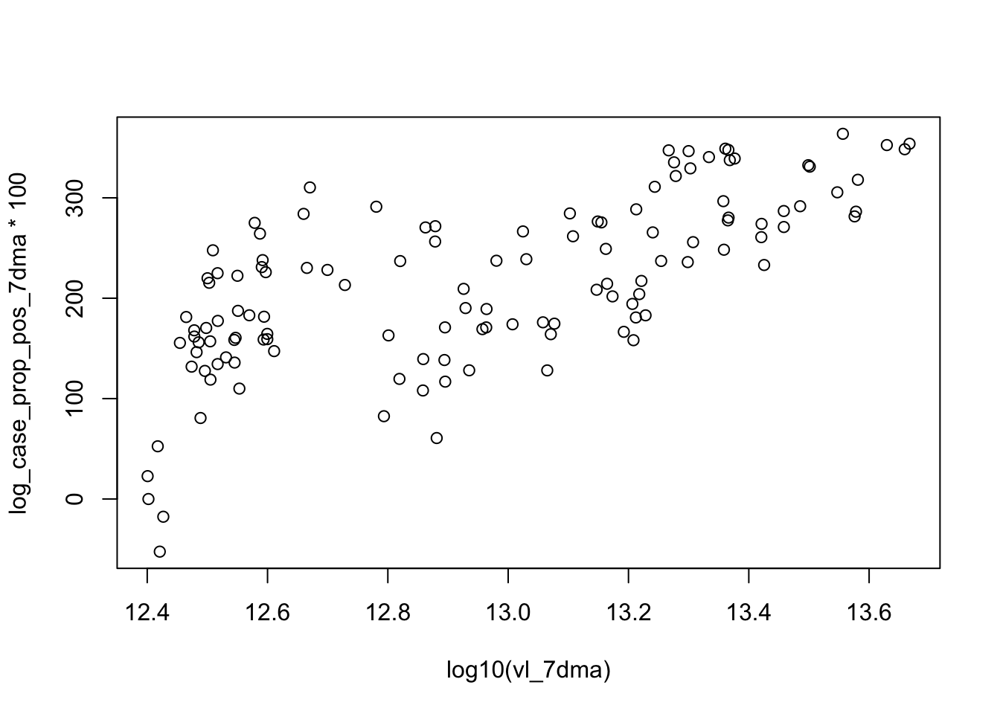
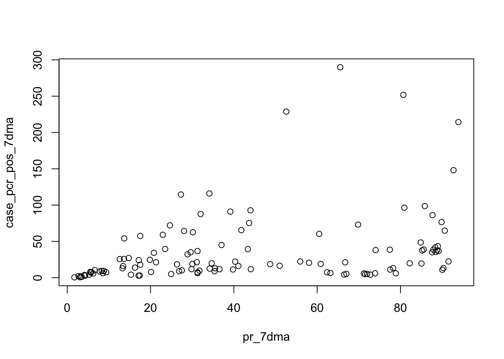
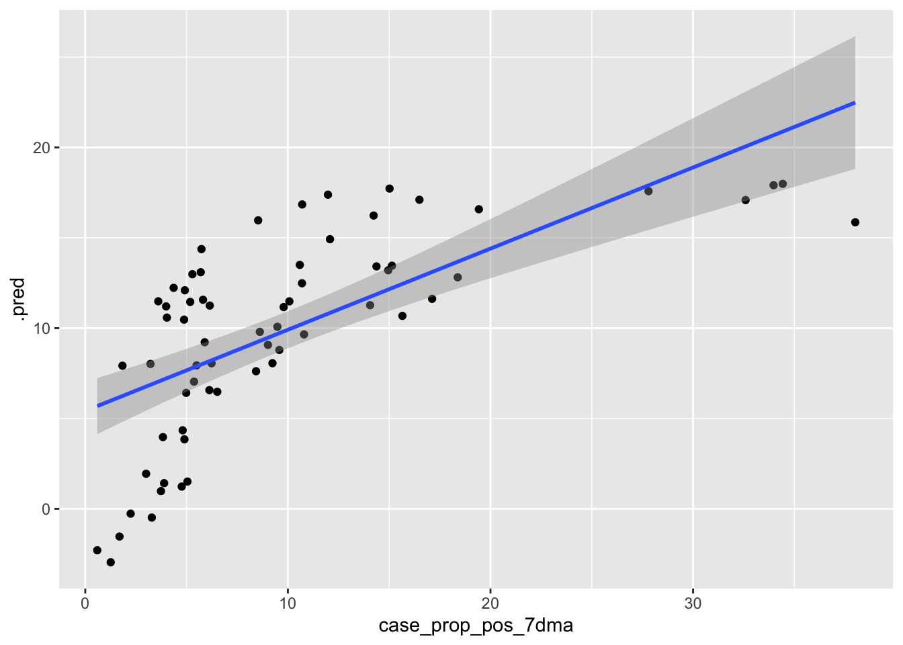

knitr::opts_chunk$set(message=F)Univariate Linear Regressions
Load packages
library(tidyverse)
library(here)
library(forecast)
library(tidymodels)Load data
data <- readRDS(here("data/processed_data/covid_wbe_7dma_weekly.rds")) %>%
mutate(log10_vl_7dma=log10(vl_7dma),
log_case_pos_7dma=log(case_pcr_pos_7dma),
case_prop_pos_7dma=case_prop_pos_7dma*100,
log_case_prop_pos_7dma=log(case_prop_pos_7dma),
log_pr_7dma=log(pr_7dma))
#certain variables have been transformed due to distribution abnormality, with some distributions being normalized by certain transformations
#i wanted to build models with both transformed and non-transformed data to compare performancesData splitting
See notes on script 3 for details
data_train_dates <- data %>% head(n = 92) #selects dates before or on the 13th week of 2022 (end of March)
split <- initial_split(data_train_dates, prop=8/10) #reserve 20% of observations at random to do validation
set.seed(13)
train <- training(split) #create dataset to train models with
set.seed(16)
test <- testing(split) #create smaller dataset to do model performance validation withDefine model
lr <- linear_reg()
null <- null_model() %>% set_engine("parsnip") %>% set_mode("regression")A) Log10 Viral load as predictor
1. Positive test count 7DMA ~ VL 7DMA
Viz
hist(log(data$case_pcr_pos_7dma)) #check distribution of dependent variable (more normal when natural log transformed)
hist(log10(data$vl_7dma)) #distribution of independent variable (somewhat normally distributed)
plot(log10(case_pcr_pos_7dma)~ log10(vl_7dma), data=data)
Model
recipe1 <- recipe(case_pcr_pos_7dma ~ log10_vl_7dma, data = train) #recipe
####################################################################################
workflow1 <- workflow() %>%
add_model(lr) %>%
add_recipe(recipe1) #model workflow
####################################################################################
set.seed(13)
fit1 <- workflow1 %>%
fit(data = train) #fit model to data
tidy(fit1) ####################################################################################
aug_train1 <- augment(fit1, train)
aug_train1 %>% select(case_pcr_pos_7dma, .pred) #make predictions on train data####################################################################################
set.seed(13)
folds1 <- vfold_cv(train, v = 5, repeats = 5, strata = case_pcr_pos_7dma)Warning: The number of observations in each quantile is below the recommended threshold of 20.
• Stratification will use 3 breaks instead.
The number of observations in each quantile is below the recommended threshold of 20.
• Stratification will use 3 breaks instead.
The number of observations in each quantile is below the recommended threshold of 20.
• Stratification will use 3 breaks instead.
The number of observations in each quantile is below the recommended threshold of 20.
• Stratification will use 3 breaks instead.
The number of observations in each quantile is below the recommended threshold of 20.
• Stratification will use 3 breaks instead.set.seed(13)
cv1 <- fit_resamples(workflow1, resamples = folds1)
cv1_metrics <- collect_metrics(cv1)
cv1_metrics #check cross validation metrics####################################################################################
workflow_null1 <- workflow() %>%
add_model(null) %>%
add_recipe(recipe1)
null_cv_metrics1 <- fit_resamples(workflow_null1, resamples = folds1)
collect_metrics(null_cv_metrics1) #check null model####################################################################################
rmse1 <- aug_train1 %>% rmse(truth = case_pcr_pos_7dma, .pred)
rsq1 <- aug_train1 %>% rsq(truth = case_pcr_pos_7dma, .pred)
m1_metrics <- full_join(rmse1, rsq1)
m1_metrics #check metrics of predictions on train data####################################################################################
aug_train1 %>% ggplot(aes(case_pcr_pos_7dma, .pred)) +
geom_point() +
stat_smooth(method = "lm") #check actual vs predictedWarning: Removed 3 rows containing non-finite values (`stat_smooth()`).Warning: Removed 3 rows containing missing values (`geom_point()`).
2. Natural log positive test count 7DMA ~ log10 VL 7DMA
Viz
hist(data$log_case_pos_7dma) #check distribution of dependent variable (more normal when natural log transformed)
hist(log10(data$vl_7dma)) #distribution of independent variable (somewhat normally distributed)
plot(log_case_pos_7dma~ log10(vl_7dma), data=data)
Model
recipe2 <- recipe(log_case_pos_7dma ~ log10_vl_7dma, data = train) #recipe
####################################################################################
workflow2 <- workflow() %>%
add_model(lr) %>%
add_recipe(recipe2) #model workflow
####################################################################################
set.seed(13)
fit2 <- workflow2 %>%
fit(data = train) #fit model to data
tidy(fit2) ####################################################################################
aug_train2 <- augment(fit2, train)
aug_train2 %>% select(log_case_pos_7dma, .pred) #make predictions on train data####################################################################################
set.seed(13)
folds2 <- vfold_cv(train, v = 5, repeats = 5, strata = log_case_pos_7dma)Warning: The number of observations in each quantile is below the recommended threshold of 20.
• Stratification will use 3 breaks instead.
The number of observations in each quantile is below the recommended threshold of 20.
• Stratification will use 3 breaks instead.
The number of observations in each quantile is below the recommended threshold of 20.
• Stratification will use 3 breaks instead.
The number of observations in each quantile is below the recommended threshold of 20.
• Stratification will use 3 breaks instead.
The number of observations in each quantile is below the recommended threshold of 20.
• Stratification will use 3 breaks instead.set.seed(13)
cv2 <- fit_resamples(workflow2, resamples = folds2)
cv2_metrics <- collect_metrics(cv2)
cv2_metrics #check cross validation metrics####################################################################################
workflow_null2 <- workflow() %>%
add_model(null) %>%
add_recipe(recipe2)
null_cv_metrics2 <- fit_resamples(workflow_null2, resamples = folds2)
collect_metrics(null_cv_metrics2) #check null model####################################################################################
rmse2 <- aug_train2 %>% rmse(truth = log_case_pos_7dma, .pred)
rsq2 <- aug_train2 %>% rsq(truth = log_case_pos_7dma, .pred)
m2_metrics <- full_join(rmse2, rsq2)
m2_metrics #check metrics of predictions on train data####################################################################################
aug_train2 %>% ggplot(aes(log_case_pos_7dma, .pred)) +
geom_point() +
stat_smooth(method = "lm") #check actual vs predictedWarning: Removed 3 rows containing non-finite values (`stat_smooth()`).Warning: Removed 3 rows containing missing values (`geom_point()`).
3. Test positivity rate 7DMA ~ log10 VL 7DMA
hist(data$case_prop_pos_7dma) #check distribution of dependent variable (somewhat skewed)
hist(log10(data$vl_7dma)) #distribution of independent variable (somewhat normally except for observations near LOD
plot(case_prop_pos_7dma ~ log10(vl_7dma), data=data)
Model
recipe3 <- recipe(case_prop_pos_7dma ~ log10_vl_7dma, data = train) #recipe
####################################################################################
workflow3 <- workflow() %>%
add_model(lr) %>%
add_recipe(recipe3) #model workflow
####################################################################################
set.seed(13)
fit3 <- workflow3 %>%
fit(data = train) #fit model to data
tidy(fit3) ####################################################################################
aug_train3 <- augment(fit3, train)
aug_train3 %>% select(case_prop_pos_7dma, .pred) #make predictions on train data####################################################################################
set.seed(13)
folds3 <- vfold_cv(train, v = 5, repeats = 5, strata = case_prop_pos_7dma)Warning: The number of observations in each quantile is below the recommended threshold of 20.
• Stratification will use 3 breaks instead.
The number of observations in each quantile is below the recommended threshold of 20.
• Stratification will use 3 breaks instead.
The number of observations in each quantile is below the recommended threshold of 20.
• Stratification will use 3 breaks instead.
The number of observations in each quantile is below the recommended threshold of 20.
• Stratification will use 3 breaks instead.
The number of observations in each quantile is below the recommended threshold of 20.
• Stratification will use 3 breaks instead.set.seed(13)
cv3 <- fit_resamples(workflow3, resamples = folds3)
cv3_metrics <- collect_metrics(cv3)
cv3_metrics #check cross validation metrics####################################################################################
workflow_null3 <- workflow() %>%
add_model(null) %>%
add_recipe(recipe3)
null_cv_metrics3 <- fit_resamples(workflow_null3, resamples = folds3)
collect_metrics(null_cv_metrics3) #check null model####################################################################################
rmse3 <- aug_train3 %>% rmse(truth = case_prop_pos_7dma, .pred)
rsq3 <- aug_train3 %>% rsq(truth = case_prop_pos_7dma, .pred)
m3_metrics <- full_join(rmse3, rsq3)
m3_metrics #check metrics of predictions on train data####################################################################################
aug_train3 %>% ggplot(aes(case_prop_pos_7dma, .pred)) +
geom_point() +
stat_smooth(method = "lm") #check actual vs predictedWarning: Removed 3 rows containing non-finite values (`stat_smooth()`).Warning: Removed 3 rows containing missing values (`geom_point()`).
4. Natural log test positivity rate 7DMA ~ log10 VL 7DMA
hist(data$log_case_prop_pos_7dma*100) #check distribution of dependent variable (more normally distributed)
hist(log10(data$vl_7dma)) #distribution of independent variable (somewhat normally distributed except values near LOD)
plot(log_case_prop_pos_7dma*100 ~ log10(vl_7dma), data=data)
Model
recipe4 <- recipe(log_case_prop_pos_7dma ~ log10_vl_7dma, data = train) #recipe
####################################################################################
workflow4 <- workflow() %>%
add_model(lr) %>%
add_recipe(recipe4) #model workflow
####################################################################################
set.seed(13)
fit4 <- workflow4 %>%
fit(data = train) #fit model to data
tidy(fit4) ####################################################################################
aug_train4 <- augment(fit4, train)
aug_train4 %>% select(log_case_prop_pos_7dma, .pred) #make predictions on train data####################################################################################
set.seed(13)
folds4 <- vfold_cv(train, v = 5, repeats = 5, strata = log_case_prop_pos_7dma)Warning: The number of observations in each quantile is below the recommended threshold of 20.
• Stratification will use 3 breaks instead.
The number of observations in each quantile is below the recommended threshold of 20.
• Stratification will use 3 breaks instead.
The number of observations in each quantile is below the recommended threshold of 20.
• Stratification will use 3 breaks instead.
The number of observations in each quantile is below the recommended threshold of 20.
• Stratification will use 3 breaks instead.
The number of observations in each quantile is below the recommended threshold of 20.
• Stratification will use 3 breaks instead.set.seed(13)
cv4 <- fit_resamples(workflow4, resamples = folds4)
cv4_metrics <- collect_metrics(cv4)
cv4_metrics #check cross validation metrics####################################################################################
workflow_null4 <- workflow() %>%
add_model(null) %>%
add_recipe(recipe4)
null_cv_metrics4 <- fit_resamples(workflow_null4, resamples = folds4)
collect_metrics(null_cv_metrics4) #check null model####################################################################################
rmse4 <- aug_train4 %>% rmse(truth = log_case_prop_pos_7dma, .pred)
rsq4 <- aug_train4 %>% rsq(truth = log_case_prop_pos_7dma, .pred)
m4_metrics <- full_join(rmse4, rsq4)
m4_metrics #check metrics of predictions on train data####################################################################################
aug_train4 %>% ggplot(aes(log_case_prop_pos_7dma, .pred)) +
geom_point() +
stat_smooth(method = "lm") #check actual vs predictedWarning: Removed 3 rows containing non-finite values (`stat_smooth()`).Warning: Removed 3 rows containing missing values (`geom_point()`).
B) qPCR positivity rate as predictor
1. Positive test 7DMA ~ WW PR 7DMA
Viz
hist(log10(data$case_pcr_pos_7dma)) #check distribution of dependent variable, more normal when log transformed
hist(data$pr_7dma) #distribution of independent variable 
plot(log10(case_pcr_pos_7dma) ~ pr_7dma, data=data) #log-transformed looks better
plot(case_pcr_pos_7dma ~ pr_7dma, data=data) 
Model
recipe5 <- recipe(case_pcr_pos_7dma ~ pr_7dma, data = train) #recipe
####################################################################################
workflow5 <- workflow() %>%
add_model(lr) %>%
add_recipe(recipe5) #model workflow
####################################################################################
set.seed(13)
fit5 <- workflow5 %>%
fit(data = train) #fit model to data
tidy(fit5) ####################################################################################
aug_train5 <- augment(fit5, train)
aug_train5 %>% select(case_pcr_pos_7dma, .pred) #make predictions on train data####################################################################################
set.seed(13)
folds5 <- vfold_cv(train, v = 5, repeats = 5, strata = case_pcr_pos_7dma)Warning: The number of observations in each quantile is below the recommended threshold of 20.
• Stratification will use 3 breaks instead.
The number of observations in each quantile is below the recommended threshold of 20.
• Stratification will use 3 breaks instead.
The number of observations in each quantile is below the recommended threshold of 20.
• Stratification will use 3 breaks instead.
The number of observations in each quantile is below the recommended threshold of 20.
• Stratification will use 3 breaks instead.
The number of observations in each quantile is below the recommended threshold of 20.
• Stratification will use 3 breaks instead.set.seed(13)
cv5 <- fit_resamples(workflow5, resamples = folds5)
cv5_metrics <- collect_metrics(cv5)
cv5_metrics #check cross validation metrics####################################################################################
workflow_null5 <- workflow() %>%
add_model(null) %>%
add_recipe(recipe5)
null_cv_metrics5 <- fit_resamples(workflow_null5, resamples = folds5)
collect_metrics(null_cv_metrics5) #check null model####################################################################################
rmse5 <- aug_train5 %>% rmse(truth = case_pcr_pos_7dma, .pred)
rsq5 <- aug_train5 %>% rsq(truth = case_pcr_pos_7dma, .pred)
m5_metrics <- full_join(rmse5, rsq5)
m5_metrics #check metrics of predictions on train data####################################################################################
aug_train5 %>% ggplot(aes(case_pcr_pos_7dma, .pred)) +
geom_point() +
stat_smooth(method = "lm") #check actual vs predictedWarning: Removed 5 rows containing non-finite values (`stat_smooth()`).Warning: Removed 5 rows containing missing values (`geom_point()`).
2. Natural log positive test count
Model
recipe6 <- recipe(log_case_pos_7dma ~ pr_7dma, data = train) #recipe
####################################################################################
workflow6 <- workflow() %>%
add_model(lr) %>%
add_recipe(recipe6) #model workflow
####################################################################################
set.seed(13)
fit6 <- workflow6 %>%
fit(data = train) #fit model to data
tidy(fit6) ####################################################################################
aug_train6 <- augment(fit6, train)
aug_train6 %>% select(log_case_pos_7dma, .pred) #make predictions on train data####################################################################################
set.seed(13)
folds6 <- vfold_cv(train, v = 5, repeats = 5, strata = log_case_pos_7dma)Warning: The number of observations in each quantile is below the recommended threshold of 20.
• Stratification will use 3 breaks instead.
The number of observations in each quantile is below the recommended threshold of 20.
• Stratification will use 3 breaks instead.
The number of observations in each quantile is below the recommended threshold of 20.
• Stratification will use 3 breaks instead.
The number of observations in each quantile is below the recommended threshold of 20.
• Stratification will use 3 breaks instead.
The number of observations in each quantile is below the recommended threshold of 20.
• Stratification will use 3 breaks instead.set.seed(13)
cv6 <- fit_resamples(workflow6, resamples = folds6)
cv6_metrics <- collect_metrics(cv6)
cv6_metrics #check cross validation metrics####################################################################################
workflow_null6 <- workflow() %>%
add_model(null) %>%
add_recipe(recipe6)
null_cv_metrics6 <- fit_resamples(workflow_null6, resamples = folds6)
collect_metrics(null_cv_metrics6) #check null model####################################################################################
rmse6 <- aug_train6 %>% rmse(truth = log_case_pos_7dma, .pred)
rsq6 <- aug_train6 %>% rsq(truth = log_case_pos_7dma, .pred)
m6_metrics <- full_join(rmse6, rsq6)
m6_metrics #check metrics of predictions on train data####################################################################################
aug_train6 %>% ggplot(aes(log_case_pos_7dma, .pred)) +
geom_point() +
stat_smooth(method = "lm") #check actual vs predictedWarning: Removed 5 rows containing non-finite values (`stat_smooth()`).Warning: Removed 5 rows containing missing values (`geom_point()`).
3. Test positivity rate 7DMA ~ WW PR 7DMA
Viz
hist(data$case_prop_pos_7dma) #check distribution of dependent variable 
hist(data$pr_7dma) #distribution of independent variable 
plot(case_prop_pos_7dma ~ pr_7dma, data=data)
Model
recipe7 <- recipe(case_prop_pos_7dma ~ pr_7dma, data = train) #recipe
####################################################################################
workflow7 <- workflow() %>%
add_model(lr) %>%
add_recipe(recipe7) #model workflow
####################################################################################
set.seed(13)
fit7 <- workflow7 %>%
fit(data = train) #fit model to data
tidy(fit7) ####################################################################################
aug_train7 <- augment(fit7, train)
aug_train7 %>% select(case_prop_pos_7dma, .pred) #make predictions on train data####################################################################################
set.seed(13)
folds7 <- vfold_cv(train, v = 5, repeats = 5, strata = case_prop_pos_7dma)Warning: The number of observations in each quantile is below the recommended threshold of 20.
• Stratification will use 3 breaks instead.
The number of observations in each quantile is below the recommended threshold of 20.
• Stratification will use 3 breaks instead.
The number of observations in each quantile is below the recommended threshold of 20.
• Stratification will use 3 breaks instead.
The number of observations in each quantile is below the recommended threshold of 20.
• Stratification will use 3 breaks instead.
The number of observations in each quantile is below the recommended threshold of 20.
• Stratification will use 3 breaks instead.set.seed(13)
cv7 <- fit_resamples(workflow7, resamples = folds7)
cv7_metrics <- collect_metrics(cv7)
cv7_metrics #check cross validation metrics####################################################################################
workflow_null7 <- workflow() %>%
add_model(null) %>%
add_recipe(recipe7)
null_cv_metrics7 <- fit_resamples(workflow_null7, resamples = folds7)
collect_metrics(null_cv_metrics7) #check null model####################################################################################
rmse7 <- aug_train7 %>% rmse(truth = case_prop_pos_7dma, .pred)
rsq7 <- aug_train7 %>% rsq(truth = case_prop_pos_7dma, .pred)
m7_metrics <- full_join(rmse7, rsq7)
m7_metrics #check metrics of predictions on train data####################################################################################
aug_train7 %>% ggplot(aes(case_prop_pos_7dma, .pred)) +
geom_point() +
stat_smooth(method = "lm") #check actual vs predictedWarning: Removed 5 rows containing non-finite values (`stat_smooth()`).Warning: Removed 5 rows containing missing values (`geom_point()`).
C) Log qPCR positivity rate as predictor
1. Test positivity rate 7DMA ~ Log WW PR
Viz
hist(data$case_prop_pos_7dma) #check distribution of dependent variable 
hist(data$log_pr_7dma) #distribution of independent variable 
plot(case_prop_pos_7dma ~ log_pr_7dma, data=data)
Model
recipe8 <- recipe(case_prop_pos_7dma ~ log_pr_7dma, data = train) #recipe
####################################################################################
workflow8 <- workflow() %>%
add_model(lr) %>%
add_recipe(recipe8) #model workflow
####################################################################################
set.seed(13)
fit8 <- workflow8 %>%
fit(data = train) #fit model to data
tidy(fit8) ####################################################################################
aug_train8 <- augment(fit8, train)
aug_train8 %>% select(case_prop_pos_7dma, .pred) #make predictions on train data####################################################################################
set.seed(13)
folds8 <- vfold_cv(train, v = 5, repeats = 5, strata = case_prop_pos_7dma)Warning: The number of observations in each quantile is below the recommended threshold of 20.
• Stratification will use 3 breaks instead.
The number of observations in each quantile is below the recommended threshold of 20.
• Stratification will use 3 breaks instead.
The number of observations in each quantile is below the recommended threshold of 20.
• Stratification will use 3 breaks instead.
The number of observations in each quantile is below the recommended threshold of 20.
• Stratification will use 3 breaks instead.
The number of observations in each quantile is below the recommended threshold of 20.
• Stratification will use 3 breaks instead.set.seed(13)
cv8 <- fit_resamples(workflow8, resamples = folds8)
cv8_metrics <- collect_metrics(cv8)
cv8_metrics #check cross validation metrics####################################################################################
workflow_null8 <- workflow() %>%
add_model(null) %>%
add_recipe(recipe8)
null_cv_metrics8 <- fit_resamples(workflow_null8, resamples = folds8)
collect_metrics(null_cv_metrics8) #check null model####################################################################################
rmse8 <- aug_train8 %>% rmse(truth = case_prop_pos_7dma, .pred)
rsq8 <- aug_train8 %>% rsq(truth = case_prop_pos_7dma, .pred)
m8_metrics <- full_join(rmse8, rsq8)
m8_metrics #check metrics of predictions on train data####################################################################################
aug_train8 %>% ggplot(aes(case_prop_pos_7dma, .pred)) +
geom_point() +
stat_smooth(method = "lm") #check actual vs predictedWarning: Removed 5 rows containing non-finite values (`stat_smooth()`).Warning: Removed 5 rows containing missing values (`geom_point()`).
Notes
Model B3 seems to be performing the best so far (out of A1-4, B1-4) but no model is significantly out-performing the others yet
Many distributions are not normal and transformations do not help with normality, is this still okay to do linear regressions with?
What if something is potentially bimodally distributed? (see histogram for pr_7dma)
Next Steps (as of 11/17/23)
need to do model validation steps with the reserved 20% testing data
need to see how models will perform on the testing dates (April 2022-end of series)
need to build more univariate models, then move on to multivariates